STA5076Z Lecture 11 – Bagging & Random Forests
The primary reason for the weak performance of decision trees on out-of-sample data is that they suffer from high sampling variability, especially on higher dimensional data. In other words, if we were to take different samples from the same population and fit trees to each sample, the results could look quite different, as seen in the following example.
For illustration purposes, consider the Sonar dataset contained in the mlbench package. The task is to determine whether sets of 60 sonar signals pertain to a metal cylinder/mine (M) or a roughly cylindrical rock (R). For every random 70/30 data split we fit a vanilla regression tree and track both the fitted tree and the resulting test classification accuracy.
Show/Hide Code
library(tree)
library(mlbench)
library(maptree) #Better tree plotting
data(Sonar)
accs <- c()
par(mfrow=c(1,2))
set.seed(4026)
for (i in 1:100){
# Split and fit
train <- sample(1:nrow(Sonar), 0.7*nrow(Sonar))
my_tree <- tree(formula = Class ~ ., data = Sonar, subset = train)
# Predict and evaluate
yhat <- predict(my_tree, Sonar[-train,], type = 'class')
y <- Sonar[-train, 'Class']
accs <- c(accs, sum(diag(table(y, yhat)))/length(y)*100)
# Plots
draw.tree(my_tree, cex = 0.5)
plot(1:i, accs, type = 'o', pch = 16, xlim = c(1, 100), ylim = c(50, 100),
xlab = '', ylab = 'Classification accuracy (%)')
}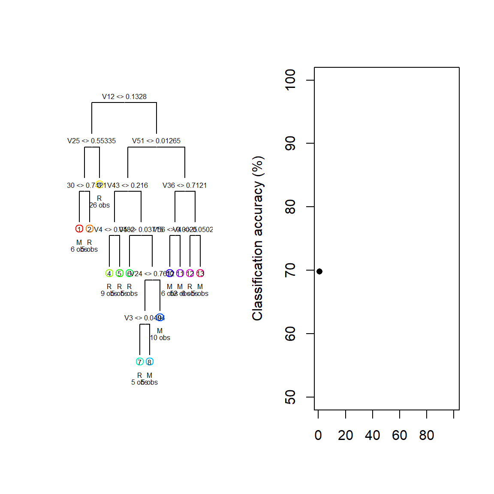
Figure 1 shows how the fitted model and its testing accuracy can vary extensively across different random samples, with a classification accuracy range of 30.2% in these 100 samples. Although we can manage the complexity – and, therefore, the sampling variance – to some extent through pruning, bagging and random forests offer a much more effective approach.
Bagging decision boundaries
The benefit of the bagging procedure above a single tree is easily measured by out-of-sample performance, which in essence means that this procedure does better at capturing the true underlying relationship, \(f\). This is seen by investigating the decision boundaries, as shown for simulated linearly separable data in Figure 2.
As we saw during the lecture, a bagged model is a special case of a random forest, hence we will use the randomForest package to fit a random forest, using all the predictors at every split. This toy example only involves two features.
Show/Hide Code
library(randomForest)
par(mfrow = c(1, 2))
# Simulate random points
set.seed(123)
x1 <- runif(500, 0, 10)
x2 <- runif(500, 0, 10)
y <- as.factor(ifelse(x2 <= 10 - x1, 0, 1)) # With a linear decision boundary
# Tree first
mytree <- tree(y ~ x1 + x2, split = 'gini')
# Checked separately that 10 nodes is a good size (verify with cv.tree)
pruned_tree <- prune.tree(mytree, best = 10, method = 'misclass')
plot(x1, x2, col = ifelse(y == 0, 'red', 'navy'), pch = 16, xlim = c(0, 10), ylim = c(0, 10),
xlab = expression(X[1]), ylab = '', cex.axis = 1.2, cex.lab = 1.5, asp = 1)
title(ylab = expression(X[2]), line = 1.8, cex.lab = 1.5) #ylab was being cut off
# Boundaries
abline(10, -1, lwd=3)
partition.tree(pruned_tree, add = T, lwd = 6, col = 'darkgreen', cex = 2)
x <- seq(0, 10, length = 100)
fgrid <- expand.grid(x1 = x, x2 = x)
yhat <- predict(pruned_tree, fgrid)[, 2]
contour(x, x, matrix(yhat, 100, 100), add = T,
levels = 0.5, drawlabels = F, lwd = 4, col = 'darkgreen')
# Now bagged model (special case of random forest with m = p)
mybag <- randomForest(y ~ x1 + x2, mtry = 2)
# Plot
plot(x1, x2, col = ifelse(y == 0, 'red', 'navy'), pch = 16, xlim = c(0, 10), ylim = c(0, 10),
xlab = expression(X[1]), ylab = '', cex.axis = 1.2, cex.lab = 1.5, asp = 1)
title(ylab = expression(X[2]), line = 1.8, cex.lab = 1.5) #ylab was being cut off
# Boundaries
abline(10, -1, lwd=3)
yhat <- predict(mybag, fgrid, type = 'prob')[, 2]
contour(x, x, matrix(yhat, 100, 100), add = T,
levels = 0.5, drawlabels = F, lwd = 3, col = 'darkgreen')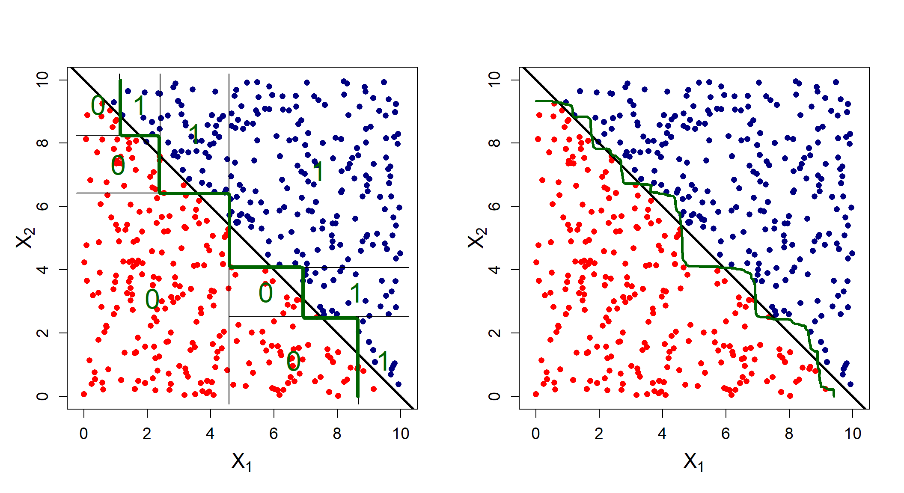
Here we see that the bagged model better approximates the decision boundary. Of course, one would rather fit a linear logistic regression to such a problem, but what about scenarios where the decision boundary is especially non-linear?
Show/Hide Code
library(randomForest)
library(plotrix) #For drawing the circle
par(mfrow = c(1, 2))
# Simulate random points
set.seed(123)
x1 <- runif(1000, 0, 10)
x2 <- runif(1000, 0, 10)
circ <- (x1 - 5)^2 + (x2 - 5)^2
y <- as.factor(ifelse(circ <= 3^2, 0, 1))
# Tree first
mytree <- tree(y ~ x1 + x2)
# Checked separately that 5 nodes is a good size (verify with cv.tree)
pruned_tree <- prune.tree(mytree, best = 5, method = 'misclass')
plot(x1, x2, col = ifelse(y == 0, 'red', 'navy'), pch = 16, xlim = c(0, 10), ylim = c(0, 10),
xlab = expression(X[1]), ylab = '', cex.axis = 1.2, cex.lab = 1.5, asp = 1)
title(ylab = expression(X[2]), line = 1.8, cex.lab = 1.5) #ylab was being cut off
# Boundaries
draw.circle(5, 5, 3, nv = 100, border = 'black', col = NA, lwd = 4)
partition.tree(pruned_tree, add = T, lwd = 6, col = 'darkgreen', cex = 2)
x <- seq(0, 10, length = 150)
fgrid <- expand.grid(x1 = x, x2 = x)
yhat <- predict(pruned_tree, fgrid)[, 2]
contour(x, x, matrix(yhat, 150, 150), add = T,
levels = 0.5, drawlabels = F, lwd = 4, col = 'darkgreen')
# Now bagged model (special case of random forest with m = p)
mybag <- randomForest(y ~ x1 + x2, mtry = 2)
# Plot
plot(x1, x2, col = ifelse(y == 0, 'red', 'navy'), pch = 16, xlim = c(0, 10), ylim = c(0, 10),
xlab = expression(X[1]), ylab = '', cex.axis = 1.2, cex.lab = 1.5, asp = 1)
title(ylab = expression(X[2]), line = 1.8, cex.lab = 1.5) #ylab was being cut off
# Boundaries
draw.circle(5, 5, 3, nv = 100, border = 'black', col = NA, lwd = 4)
yhat <- predict(mybag, fgrid, type = 'prob')[, 2]
contour(x, x, matrix(yhat, 150, 150), add = T,
levels = 0.5, drawlabels = F, lwd = 3, col = 'darkgreen')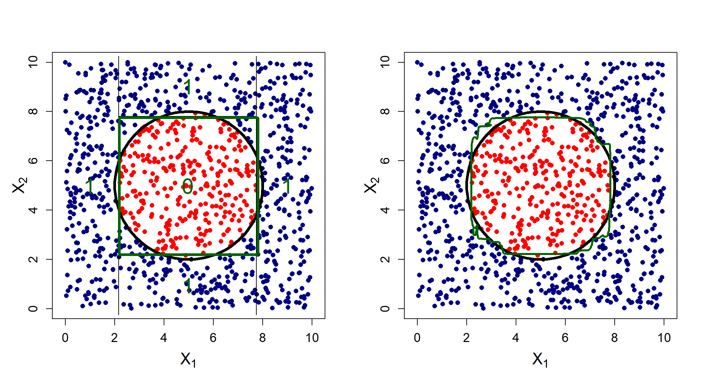
Figure 3 again shows that although the tree does roughly capture the overall pattern, its orthogonal splits struggle to capture the circular boundary, whereas the bagged model adjusts appropriately to some extent.
Example – California housing
After applying an 80/20 data split into training and testing sets, we will start by using the randomForest package to fit both a vanilla random forest and a bagged model to the California housing dataset, both using 250 trees. We will also keep track of the training times.
Show/Hide Code
calif <- read.csv('data/calif.csv')
calif$HousePrice <- log(calif$HousePrice)
# Train/test split
set.seed(5076)
train <- sample(1:nrow(calif), 0.8*nrow(calif))
# Bagging
bag_250_time <- system.time(
calif_bag <- randomForest(HousePrice ~ ., data = calif, subset = train,
mtry = ncol(calif) - 1, #Use all features (minus response)
ntree = 250,
importance = T, #Keep track of importance (faster without)
#do.trace = 25, #Can keep track of progress if we want
na.action = na.exclude)
)
# Random Forest
rf_250_time <- system.time(
calif_rf <- randomForest(HousePrice ~ ., data = calif, subset = train,
ntree = 250,
importance = T,
na.action = na.exclude)
)From the model object we can extract much information on the fit (see calif_rf$...). For example, we can see that the random forest’s trees contained on average 11016 terminal nodes! We can also look at the percentage of variation in \(Y\) captured by the model, i.e. the coefficient of determination (\(R^2\)), by just printing the model object:
Show/Hide Code
calif_bag
Call:
randomForest(formula = HousePrice ~ ., data = calif, mtry = ncol(calif) - 1, ntree = 250, importance = T, subset = train, na.action = na.exclude)
Type of random forest: regression
Number of trees: 250
No. of variables tried at each split: 8
Mean of squared residuals: 0.05197305
% Var explained: 83.96Show/Hide Code
calif_rf
Call:
randomForest(formula = HousePrice ~ ., data = calif, ntree = 250, importance = T, subset = train, na.action = na.exclude)
Type of random forest: regression
Number of trees: 250
No. of variables tried at each split: 2
Mean of squared residuals: 0.05943596
% Var explained: 81.65Verifying this calculation manually (just for the random forest model):
Show/Hide Code
y_calif <- calif[train, ]$HousePrice
yhat_calif_rf <- calif_rf$predicted
# Calculate SSR = 1 - SSE/SST
round((1 - sum((y_calif - yhat_calif_rf)^2)/sum((y_calif - mean(y_calif))^2))*100, 2)[1] 81.65Interestingly, we see that the bagged model has the higher \(R^2\). Comparing their OOB error plots, we see that the bagged model also yields better (lower) errors:
Show/Hide Code
plot(calif_bag$mse, type = 'l', xlab = 'Number of trees', ylab = 'OOB MSE',
col = 'blue', lwd = 2, ylim = c(0, max(calif_rf$mse)))
lines(calif_rf$mse, col = 'darkgreen', lwd = 2, type = 's')
legend('topright', legend = c('Bagging', 'Random Forest'),
col = c('blue', 'darkgreen'), lwd = 2)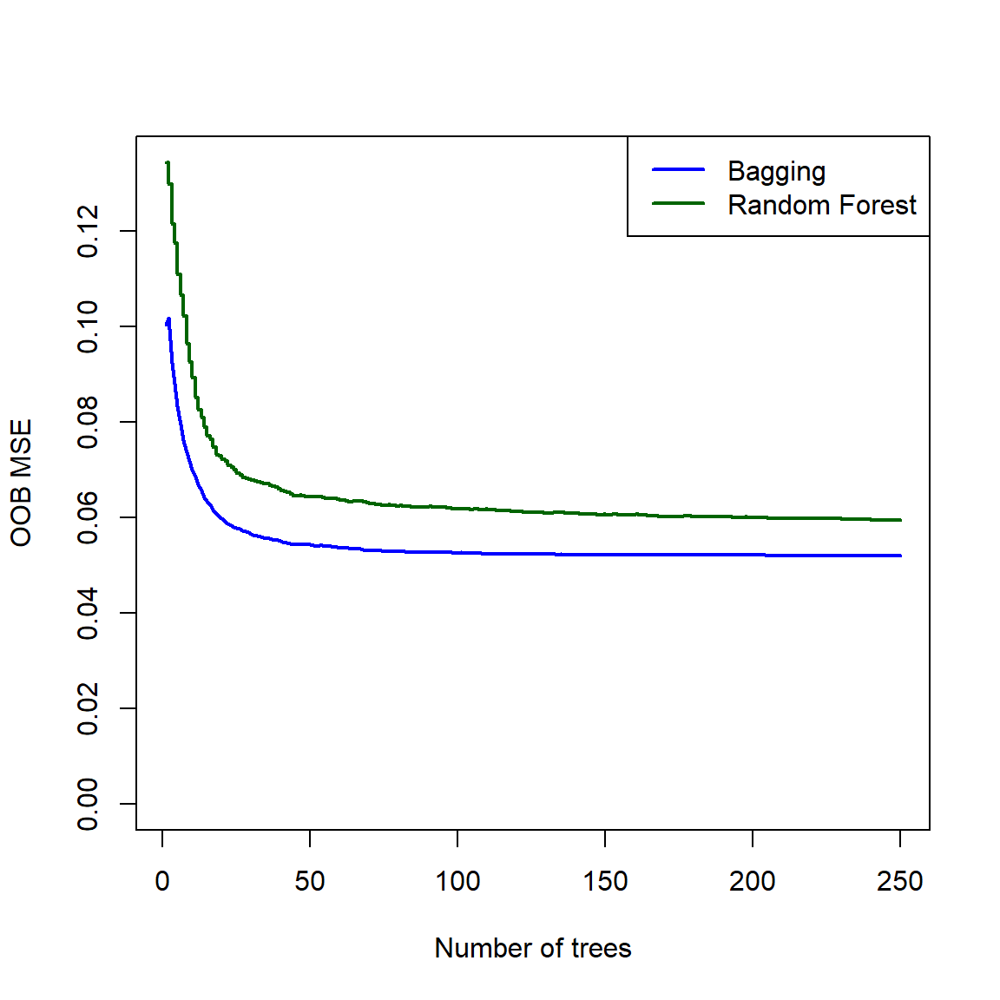
Based on this, if we had to choose a model between these two, we would pick the bagged model. We will, however, apply both to the test set to compare the OOB estimates to the observed test errors. For comparison, let us add the test error for a single pruned tree as well.
Show/Hide Code
# Quick single tree
stopcrit <- tree.control(nobs = length(train), mindev = 0.002)
calif_tree_overfit <- tree(HousePrice ~ ., data = calif[-train, ], control = stopcrit)
set.seed(5076)
calif_cv <- cv.tree(calif_tree_overfit)
T <- calif_cv$size[which.min(calif_cv$dev)]
calif_pruned <- prune.tree(calif_tree_overfit, best = T)
# Predictions
calif_bag_pred <- predict(calif_bag, newdata = calif[-train, ])
calif_rf_pred <- predict(calif_rf, newdata = calif[-train, ])
calif_tree_pred <- predict(calif_pruned, newdata = calif[-train, ])
# Prediction accuracy
y_calif_test <- calif[-train, 1]
calif_bag_mse <- mean((y_calif_test - calif_bag_pred)^2)
calif_rf_mse <- mean((y_calif_test - calif_rf_pred)^2)
calif_tree_mse <- mean((y_calif_test - calif_tree_pred)^2)
# Plot MSEs
plot(calif_bag$mse, type = 'l', xlab = 'Number of trees', ylab = 'MSE',
col = 'blue', lwd = 2, ylim = c(0, calif_tree_mse*2))
lines(calif_rf$mse, col = 'darkgreen', lwd = 2)
abline(h = calif_bag_mse, col = 'blue', lty = 2, lwd = 2)
abline(h = calif_rf_mse, col = 'darkgreen', lty = 2, lwd = 2)
abline(h = calif_tree_mse, col = 'grey', lty = 2, lwd = 2)
legend('topright', legend = c('Bagging OOB', 'Bagging test', 'Random forest OOB', 'Random forest test', 'Single tree test'),
col = c('blue', 'blue', 'darkgreen', 'darkgreen', 'grey'), lwd = 2, lty = c('solid', 'dashed', 'solid', 'dashed', 'dashed'))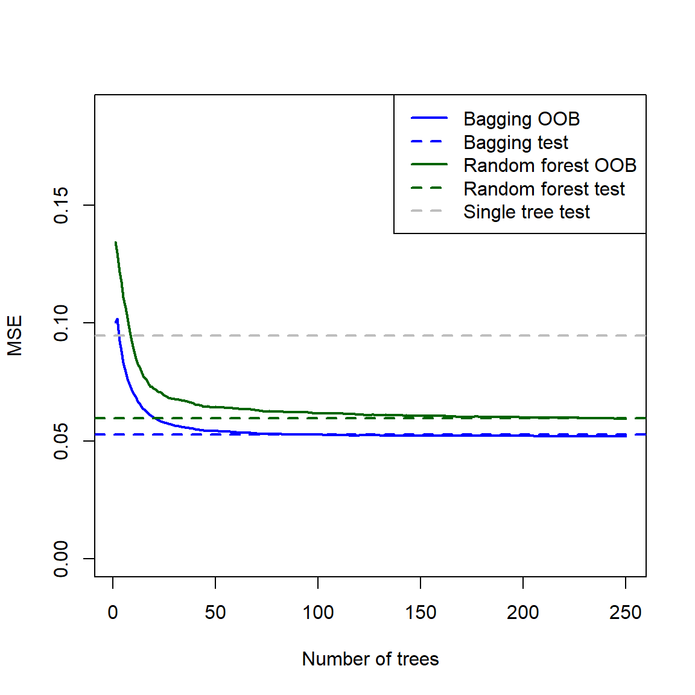
As expected, the model with \(m=8\) performed better on the test set. It is also interesting to note that for both models, the OOB error slightly overestimated the testing error. The bagged model’s test MSE of 0.05 is approximately half of the pruned regression tree test MSE (0.09).
Looking at the training times (in seconds), we see that it executed fairly quickly, even for this moderately-sized dataset:
Show/Hide Code
bag_250_time user system elapsed
84.25 0.56 84.98 Show/Hide Code
rf_250_time user system elapsed
36.61 0.78 37.52 The ranger package offers inter alia built-in parallelisation across cores to improve runtimes significantly. Fitting the bagged model using this package:
Show/Hide Code
library(ranger)
ranger_time <- system.time(
ranger_bag <- ranger(formula = HousePrice ~ .,
data = calif[train, ],
num.trees = 250,
mtry = ncol(calif) - 1)
)We observe a significantly faster runtime:
Show/Hide Code
ranger_time user system elapsed
18.11 0.38 9.38 The model object also has some neat output to explore. For example, let’s investigate the 100th tree in the forest:
Show/Hide Code
head(treeInfo(ranger_bag, 100)) nodeID leftChild rightChild splitvarID splitvarName splitval terminal
1 0 1 2 0 Income 3.56310 FALSE
2 1 3 4 0 Income 2.32730 FALSE
3 2 5 6 0 Income 5.69025 FALSE
4 3 7 8 6 Latitude 34.47000 FALSE
5 4 9 10 6 Latitude 37.91500 FALSE
6 5 11 12 1 HouseAge 17.50000 FALSE
prediction
1 NA
2 NA
3 NA
4 NA
5 NA
6 NANote, however, that since the trees are fitted in parallel we cannot keep track of OOB MSE as the number of trees increase; we can only extract the final OOB MSE.
We can now leverage the speed of this package to answer an important question, namely which value of \(m\) is best for this example. In the analyses above we only used \(m = p = 8\) and \(m = \lfloor p/3 \rfloor = 2\), but perhaps another value would yield better results. To determine this, we will use caret to perform a hyperparameter gridsearch (using ranger) across all possible values of \(m\). We can also control the tree depth, therefore we will try different size trees as well. We will again use 250 trees.
Show/Hide Code
library(caret)
set.seed(1)
# Create combinations of hyperparameters
# see getModelInfo()$ranger$parameters
calif_rf_grid <- expand.grid(mtry = 2:(ncol(calif) - 1),
splitrule = 'variance', #Must specify. This is RSS for regression
min.node.size = c(1, 5, 20)) #Default for regression is 5. Controls tree size
ctrl <- trainControl(method = 'oob', verboseIter = F) #Can set to T to track progress
# Use ranger to run all these models
calif_rf_gridsearch <- train(HousePrice ~ .,
data = calif,
subset = train,
method = 'ranger',
num.trees = 250,
importance = 'impurity',
#verbose = T,
trControl = ctrl,
tuneGrid = calif_rf_grid) #Here is the gridThe hyperparameter combination that yielded the best OOB result is as follows:
Show/Hide Code
calif_rf_gridsearch$finalModelRanger result
Call:
ranger::ranger(dependent.variable.name = ".outcome", data = x, mtry = min(param$mtry, ncol(x)), min.node.size = param$min.node.size, splitrule = as.character(param$splitrule), write.forest = TRUE, probability = classProbs, ...)
Type: Regression
Number of trees: 250
Sample size: 16512
Number of independent variables: 8
Mtry: 6
Target node size: 5
Variable importance mode: impurity
Splitrule: variance
OOB prediction error (MSE): 0.05247534
R squared (OOB): 0.8380376 According to this process, the best random forest model was one with \(m =\) 6 and terminal nodes of size 5. A particularly useful feature of caret’s train() function is the trivially easy plotting of the hyperparameter tuning results, allowing one to see not only which combination was best, but also how it compared to others, as well as the effect of changing certain hyperparameters. This is shown in Figure 6.
Show/Hide Code
plot(calif_rf_gridsearch)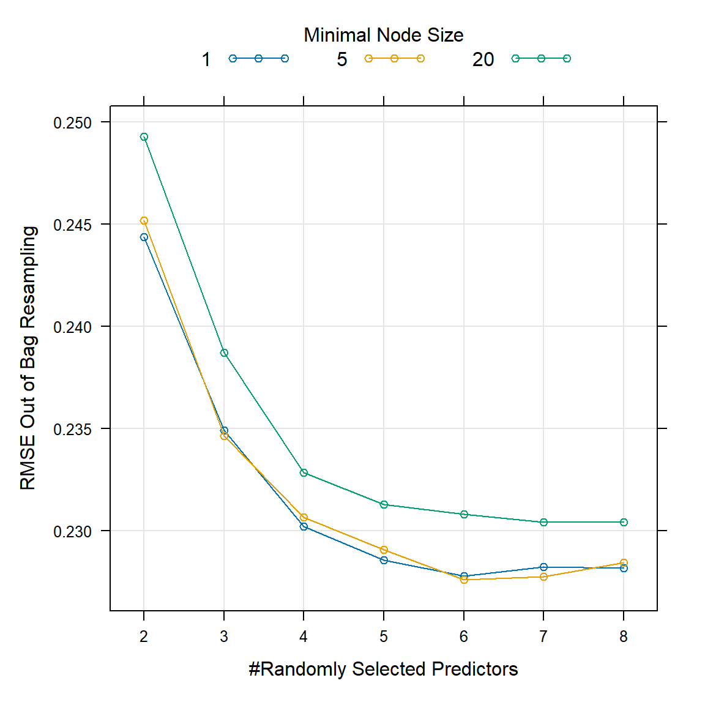
There does not seem to be much difference between using entirely overfitted trees (minimal node size = 1) and ones with a minimal node size of 5, but increasing the node size to 20 (reducing the trees’ size) yielded worse performance for all values of \(m\). Although there is not much in it, we will now use the model that yielded the lowest OOB error to predict on the test set.
Show/Hide Code
calif_rfgrid_pred <- predict(calif_rf_gridsearch, newdata = calif[-train,])
mean((y_calif_test - calif_rfgrid_pred)^2)[1] 0.05286888Comparing this to the \(m=8\) model from earlier, we actually observe a miniscule decrease in performance on the test MSE, which was 0.0527744, although the difference is negligible. To reiterate: in practice, one would only use the test set to get one final prediction after selecting a model based on CV/OOB errors. This test set comparison was merely for illustration.
Finally, let’s look at the variable importance plot. Although most packages contain their own built-in variable importance plotting functions, it is most convenient to use packages designed specifically for this purpose, like vip, to ensure standard presentation across different model classes. Note we measured impurity-based variable importance during training, which we can extract from the model object. We can use vi_permute() to calculate permutation importance (see an example of this later), or we can retrain the model and keep track of perumtation importance this time. Given the speed of ranger, we will do the latter here.
Show/Hide Code
library(vip)
library(ggplot2)
library(patchwork) #Easy way to combine ggplots
calif_rf_besthp <- calif_rf_gridsearch$bestTune
calif_rf_perm <- ranger(
HousePrice ~ .,
data = calif[train, ],
num.trees = 250,
mtry = calif_rf_besthp$mtry,
min.node.size = calif_rf_besthp$min.node.size,
splitrule = calif_rf_besthp$splitrule,
importance = 'permutation',
seed = 123
)
crf_imp_p <- vip(calif_rf_gridsearch) +
labs(
title = 'Impurity Variable Importance',
x = 'Increase in Prediction Error',
y = NULL
) +
theme_minimal()
crf_per_p <- vip(calif_rf_perm) +
labs(
title = 'Permutation Variable Importance',
x = 'Decrease in Splitting Criterion',
y = NULL
) +
theme_minimal()
crf_per_p + crf_imp_p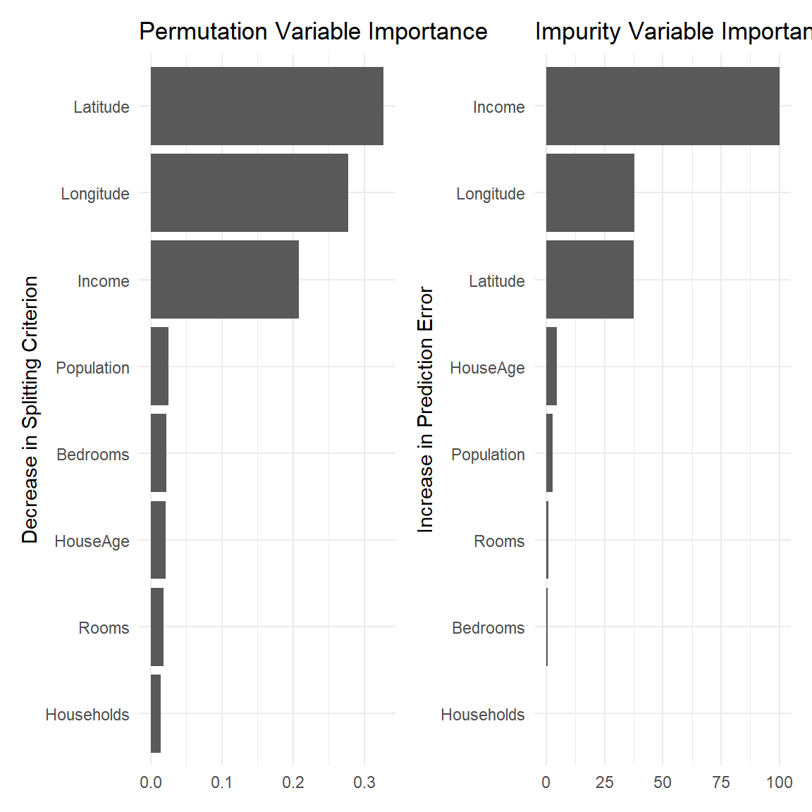
As expected, we see that median neighbourhood income yielded the greatest average reduction in RSS, during training followed by the location information. However, during permutation, removing only one of the location variables at a time did not have a major effect on prediction performance, presumably because much of the predictive power was still contained in the other location variable.
We can now apply the same procedure to the Titanic dataset.
Example – Titanic
In practice one might want to jump straight to the hyperparameter tuning (after doing the necessary exploration and cleaning, of course). However, since we are still exploring and comparing these methods, we will again first see how the bagged model compares to the default random forest, with a single pruned tree again added for reference. This step also helps to determine whether the number of trees is sufficient.
Since the Titanic dataset is much smaller than the California data, we will use a 70/30 split to be more certain of our out-of-sample performance.
Show/Hide Code
titanic <- read.csv('data/titanic.csv', stringsAsFactors = T)
titanic$Pclass <- as.factor(titanic$Pclass) #Class coded as integer, should be factor
# Train/test split
titanic <- na.omit(titanic)
set.seed(1)
train <- sample(1:nrow(titanic), 0.7*nrow(titanic))
# Bagging
titanic_bag <- randomForest(Survived ~ ., data = titanic, subset = train,
mtry = ncol(titanic) - 1,
ntree = 1000)
# Random Forest
titanic_rf <- randomForest(Survived ~ ., data = titanic, subset = train,
ntree = 1000)
# Quick single tree
stopcrit <- tree.control(nobs = length(train), mindev = 0.005)
titanic_tree_overfit <- tree(Survived ~ ., data = titanic, subset = train, control = stopcrit)
titanic_cv <- cv.tree(titanic_tree_overfit)
T <- titanic_cv$size[which.min(titanic_cv$dev)]
titanic_pruned <- prune.tree(titanic_tree_overfit, best = T)
# Predictions
titanic_bag_pred <- predict(titanic_bag, newdata = titanic[-train, ])
titanic_rf_pred <- predict(titanic_rf, newdata = titanic[-train, ])
titanic_tree_pred <- predict(titanic_pruned, newdata = titanic[-train, ], type = 'class')
# Prediction accuracy
y_titanic_test <- titanic[-train, 1]
titanic_bag_mis <- mean(y_titanic_test != titanic_bag_pred)
titanic_rf_mis <- mean(y_titanic_test != titanic_rf_pred)
titanic_tree_mis <- mean(y_titanic_test != titanic_tree_pred)
# Plot errors
plot(titanic_rf$err.rate[, 'OOB'], xlab = 'Number of trees', ylab = 'Classification error',
type = 's', col = 'darkgreen', ylim = c(0.1, titanic_tree_mis))
lines(titanic_bag$err.rate[, 'OOB'], col = 'blue', type = 's')
abline(h = titanic_bag_mis, col = 'blue', lty = 2, lwd = 2)
abline(h = titanic_rf_mis, col = 'darkgreen', lty = 2, lwd = 2)
abline(h = titanic_tree_mis, col = 'grey', lty = 2, lwd = 2)
legend('bottomright', legend = c('Bagging OOB', 'Bagging test', 'Random forest OOB', 'Random forest test', 'Single tree test'),
col = c('blue', 'blue', 'darkgreen', 'darkgreen', 'grey'), lwd = 2, lty = c('solid', 'dashed', 'solid', 'dashed', 'dashed'))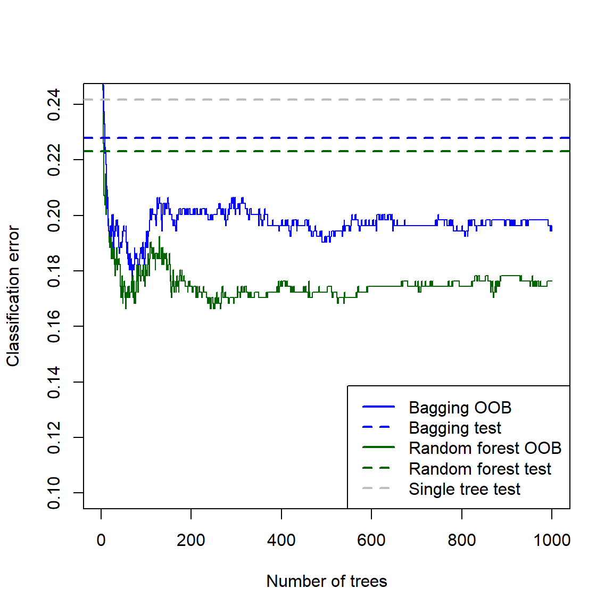
For this dataset – which is again considerably smaller than the California problem – we see that the OOB errors underestimated the testing errors. Although the default random forest was superior, we would again like to check all possible values of \(m\). We will also try two different splitting criteria: Gini index and Hellinger distance. See Aler, Valls, and Boström (2020) for information on the latter.
Show/Hide Code
set.seed(2)
# Create combinations of hyperparameters
titanic_rf_grid <- expand.grid(mtry = 2:(ncol(titanic) - 1),
splitrule = c('gini', 'hellinger'),
min.node.size = c(1, 5, 10))
ctrl <- trainControl(method = 'oob', verboseIter = F)
# Use ranger to run all these models
titanic_rf_gridsearch <- train(Survived ~ .,
data = titanic,
subset = train,
method = 'ranger',
num.trees = 1000,
trControl = ctrl,
tuneGrid = titanic_rf_grid,
importance = 'impurity')Show/Hide Code
plot(titanic_rf_gridsearch)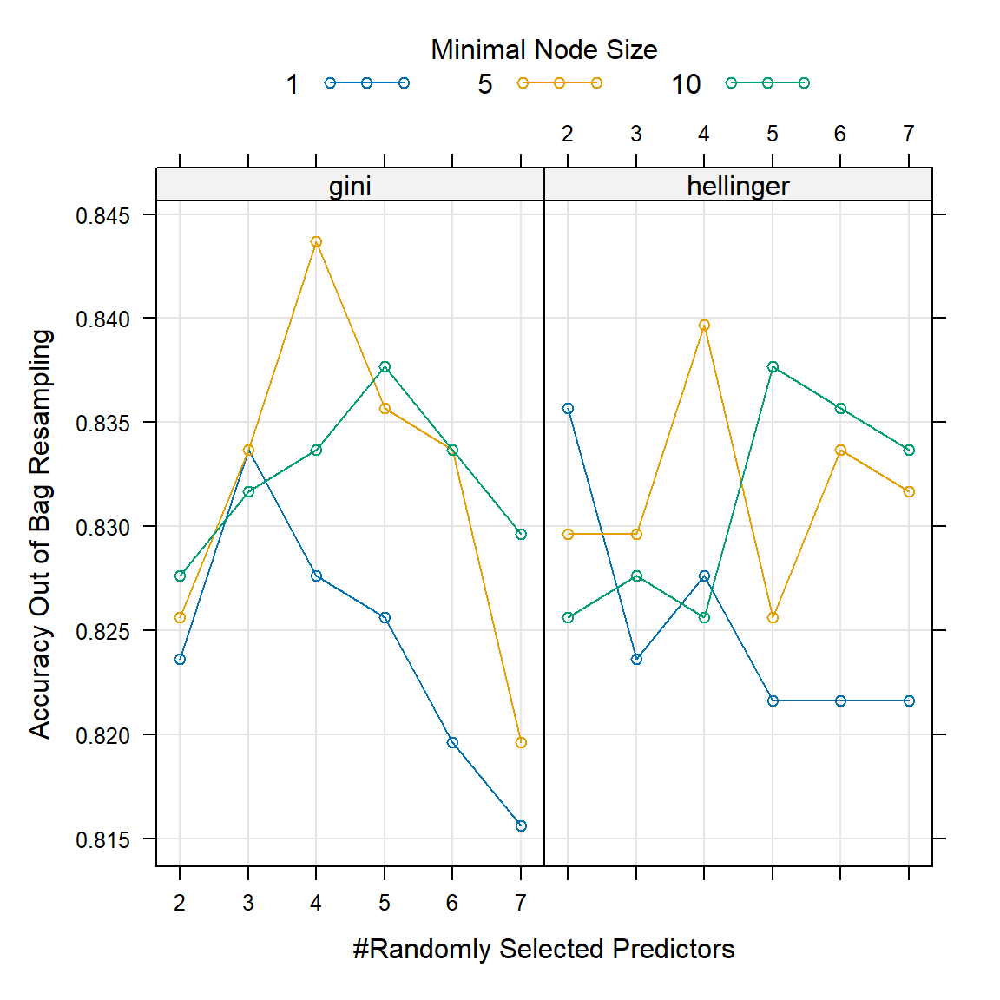
In Figure 8 we see that both splitting rules yield the highest accuracy when \(m=4\) and minimum node size is 5, with the Gini index split being superior at this combination. Note that these models fitted to a relatively small dataset like this one can be susceptible to sampling variation. As a homework exercise, rerun the above procedure multiple times and observe the change in results.
Next, we use the model that did best in OOB performance for prediction.
Show/Hide Code
titanic_rfgrid_pred <- predict(titanic_rf_gridsearch, newdata = titanic[-train,])
titanic_rf_tuned_mis <- mean(y_titanic_test != titanic_rfgrid_pred)Tuning the random forest’s hyperparameters brought the misclassification rate down from 22.33% to 21.4%.
Finally, let’s consider the variable importance plot. Since prediction is not the primary concern in the Titanic dataset, we will only consider impurity importance, i.e. the relative contribution by each variable to reducing the objective function during training. This was stored during training and can be extracted using caret’s varImp() function:
Show/Hide Code
plot(varImp(titanic_rf_gridsearch))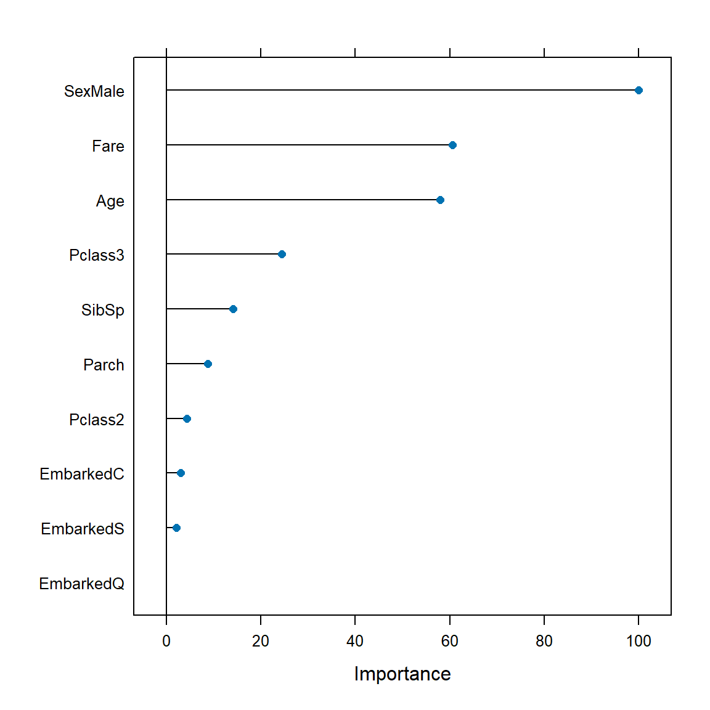
Passenger sex is by far the most important factor, followed by age and fare, which were similar. Whether or not they were 3rd class passengers is somewhat important (also refer back to the classification trees lecture result, where we used the entire dataset).
Example – Wine quality
Returning to a regression problem, specifically the wine quality dataset collected by Cortez and Reis (2009), let’s see if a random forest can improve upon the \(R^2\) value of 32% which we observed for the single regression tree.
Show/Hide Code
# Read in and split the data
wine <- read.csv('data/winequality-white.csv', sep = ';')
set.seed(5076)
wine_train_ind <- sample(nrow(wine), 0.8*nrow(wine))Let us repeat the grid search as applied to the California dataset.
Show/Hide Code
set.seed(1)
# Create combinations of hyperparameters
wine_rf_grid <- expand.grid(mtry = 2:(ncol(wine) - 1),
splitrule = 'variance',
min.node.size = 1:5)
ctrl <- trainControl(method = 'oob', verboseIter = F)
# Use ranger to run all these models
wine_rf_gridsearch <- train(quality ~ .,
data = wine,
subset = wine_train_ind,
method = 'ranger',
num.trees = 500,
trControl = ctrl,
tuneGrid = wine_rf_grid,
importance = 'impurity') Viewing the hyperparameter tuning results:
Show/Hide Code
plot(wine_rf_gridsearch)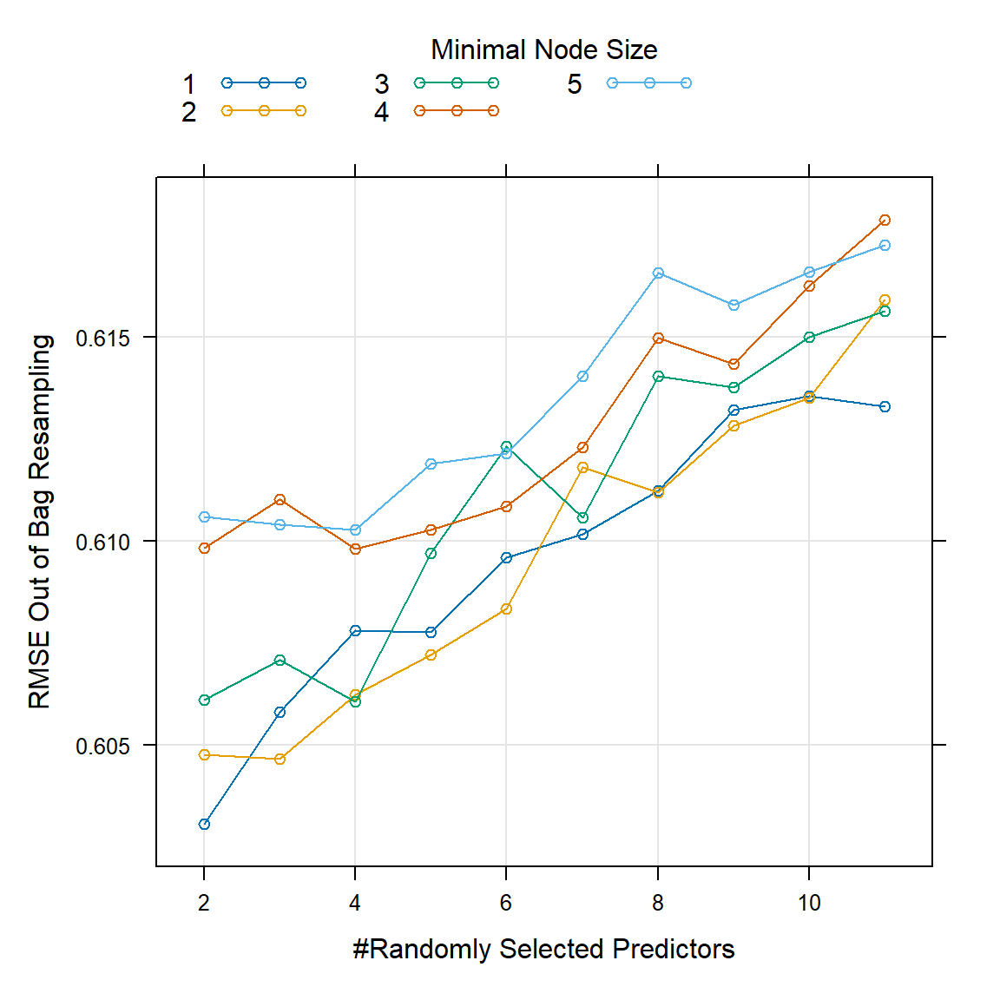
Regardless of the tree size, fewer features are generally better.
What were the most important features? Based on the single tree, we except alcohol content to play a role. Here is an example of using the vi_permute() function to calculate the permutation performance.
Show/Hide Code
library(dplyr)
set.seed(1)
x_train <- select(wine[wine_train_ind, ], -quality)
y_train <- wine$quality[wine_train_ind]
vip_pred_wrapper <- function(object, newdata) {
predict(object, newdata = newdata)
}
wine_per_imp <- vi_permute(
object = wine_rf_gridsearch,
feature_names = colnames(x_train),
train = x_train,
target = y_train,
metric = 'rmse',
pred_wrapper = vip_pred_wrapper,
nsim = 5
)
wine_per_p <- vip(wine_per_imp) +
labs(
title = 'Permutation Variable Importance',
x = 'Increase in Prediction Error',
y = NULL
) +
theme_minimal()
wine_imp_p <- vip(wine_rf_gridsearch) +
labs(
title = 'Impurity Variable Importance',
x = 'Decrease in Splitting Criterion',
y = NULL
) +
theme_minimal()
wine_per_p + wine_imp_p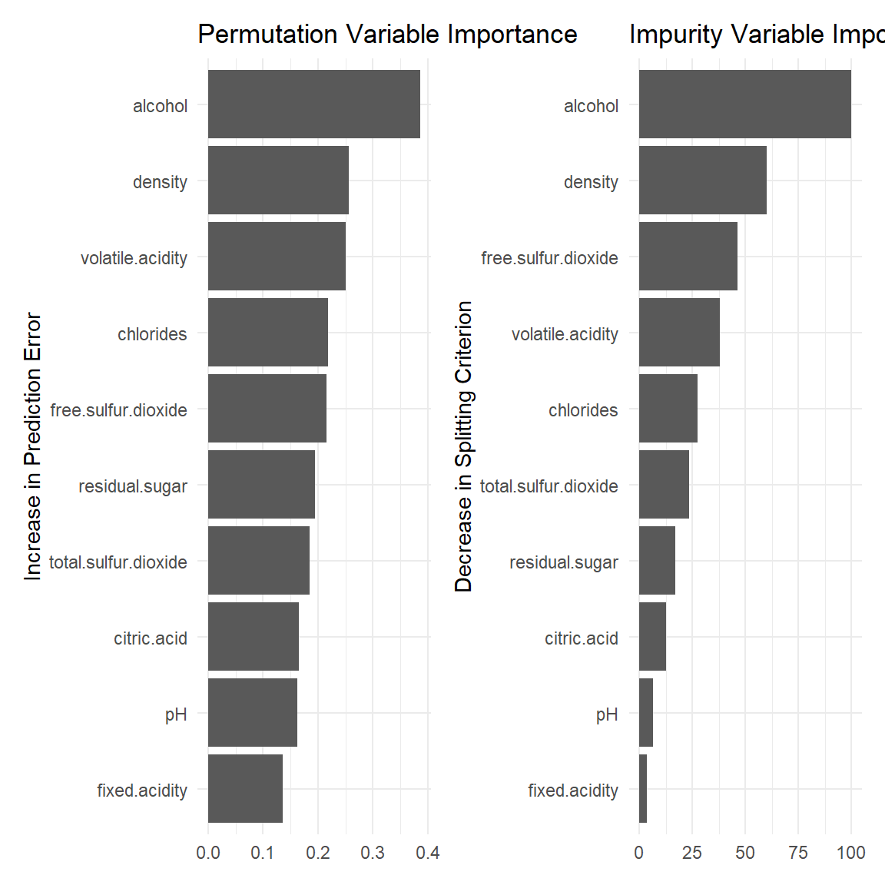
According to this model, density is much more important than the single tree suggested.
Calculating the test RMSE:
Show/Hide Code
y <- wine[-train, 'quality']
yhat <- predict(wine_rf_gridsearch, newdata = wine[-train,])
(wine_rf_rmse <- sqrt(mean((yhat - y)^2)))[1] 0.3262395This is noticeably lower than the best regression tree’s RMSE of 0.71. The random forest also yields a much improved coefficient of determination:
Show/Hide Code
(1 - sum((y - yhat)^2)/sum((y - mean(y))^2))*100[1] 86.41017